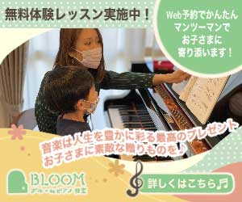
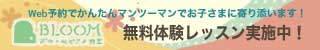
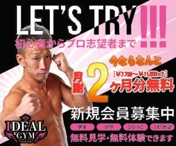
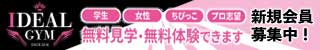
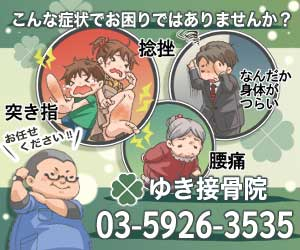
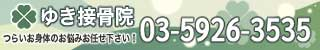
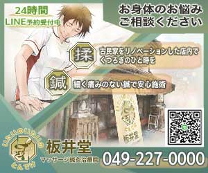
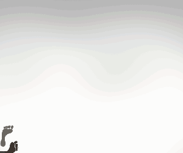

#8dca8d
#f4d482
#c4dec4
#e59e8a
#ffffe3
#56493d

#8dca8d
#f4d482
#c4dec4
#e59e8a
#ffffe3
#56493d
既存サイトの可愛らしさを出せるように、トンマナとデザインを合わせてバナーのレイアウト及びデザインを考えました。

#f7b8d5
#e85299
#f53623
#f75d11
#f9f05d
#070707

#f7b8d5
#e85299
#070707
既存サイトとトンマナを合わせて、スピード感が出るように黒の背景を斜めに配置して集中線を入れました。

#e9ecd3
#acc4ab
#608b78
#265249
#de5e50
#67818e
#8ca6d6
#474747
#010101
#e7e85e

#e9ecd3
#acc4ab
#608b78
#265249
#fffeed
制作したサイトにトンマナを合わせ、イラストを使って親しみやすくし、電話番号のフォントを大きくして見やすくしました。

#99bca4
#71a094
#7e9c84
#688e7a
#809577
#659933
#c4bb6e
#bea737
#655a26
#36322d
#99bca4
#71a094
#7e9c84
#688e7a
#809577
#659933
#c4bb6e
#bea737
#655a26
#36322d
#36322d
制作したサイトはロゴの八角形に合わせて直線を組み合わせた形にしたので、バナーも八角形をイメージして枠を作り、サイト用に作成して使用したイラストをここでも使いました。
サイトではLINEで予約を取れるようにしたので、バナーにも入れました。

#e8b860
#fdc13f
#ff0000
#c60017
#aa6f70
#8c595a
#cdb190
#687c6c
#1a3969
#736343
#36322d
#fdc13f
#ff0000
#c60017
#a91d26
#123161
#8aa2be
#36322d
Photoshopのカスタムシェイプツールで足跡を見つけ、どうしても動かしたくなったので、関連のありそうな探偵事務所のバナーを作ってみました。
合わせて探偵のイラストも作成。動画はCLIP STUDIO PAINTの動くイラストを使って作成しましたが、YouTubeで使い方を見ながらはじめて作成したので時間がかかりました。